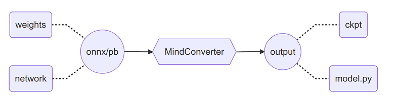

使用MindConverter迁移模型定义脚本¶

工具概述¶
MindConverter是一款模型迁移工具，可将PyTorch(ONNX)或Tensorflow(PB)模型快速迁移到MindSpore框架下使用。模型文件（ONNX/PB）包含网络模型结构（network）与权重信息（weights），迁移后将生成MindSpore框架下的模型定义脚本（model.py）与权重文件（ckpt）。

此外，本工具支持通过在PyTorch网络脚本中增加API(pytorch2mindspore)的方式，将PyTorch网络模型迁移到MindSpore框架下。
快速开始¶
安装MindConverter请参考工具安装，安装完成后可获得命令行和API如下：
使用命令行¶
mindconverter --model_file /path/to/model_file --shape SHAPE --input_nodes INPUTS --output_nodes OUTPUTS
--model_file指定模型文件路径，模型文件支持onnx或pb格式。--shape指定模型输入shape信息，多输入场景以空格分隔。--input_nodes指定模型输入节点名称，多输入场景以空格分隔。--output_nodes指定模型输出节点名称，多输出场景以空格分隔。转换结果默认输出到
$PWD/output。
注意事项：
模型文件为
onnx格式，如果模型输入shape是静态数值，只需要指定--model_file即可完成转换；否则需要指定--shape和--input_nodes才可完成转换；--output_nodes可省略。模型输入shape判断请参考常见问题。模型文件为
pb格式，无特殊场景。
更多CLI参数请参考命令行参数说明。
使用API¶
在PyTorch网络脚本中添加如下代码。
from mindconverter import pytorch2mindspore
pytorch2mindspore(model, dummy_inputs)
API使用方法请参考MindConvrter API描述。
工具安装¶
环境依赖¶
使用MindConverter前需要安装以下依赖包，建议在x86环境下安装。ARM环境请参考常见问题。
使用命令行¶
# 安装配套版本的MindSpore（以r1.2版本为例）
pip install mindspore~=1.2.0
# 安装onnx相关的依赖包
pip install onnx~=1.8.0
pip install onnxoptimizer~=0.1.2
pip install onnxruntime~=1.5.2
# 如果使用 Tensorflow PB 文件转换，则需安装tf2onnx
pip install tf2onnx~=1.7.1
使用API¶
# 安装配套版本的MindSpore（以r1.6版本为例）
pip install mindspore~=1.6.0
# 安装Torch (建议使用Torch官方的LTS版本1.8.2)
pip install torch==1.8.2+cpu -f https://download.pytorch.org/whl/lts/1.8/torch_lts.html
安装方式¶
可以采用pip或源码编译方式进行安装。
pip安装¶
安装PyPI上的版本:
pip install mindconverter
安装自定义版本:
pip install https://ms-release.obs.cn-north-4.myhuaweicloud.com/{version}/MindInsight/any/mindconverter-{version}-py3-none-any.whl --trusted-host ms-release.obs.cn-north-4.myhuaweicloud.com -i https://pypi.tuna.tsinghua.edu.cn/simple
在联网状态下，安装whl包时会自动下载MindConverter安装包的依赖项（依赖项详情参见requirements.txt），其余情况需自行安装。
{version}表示MindConverter版本号，例如下载1.6.0版本MindConverter时，{version}应写为1.6.0。
源码编译安装¶
从代码仓下载源码
git clone https://gitee.com/mindspore/mindinsight.git -b r1.7
编译安装MindConverter，可选择以下任意一种安装方式：
在源码根目录下执行如下命令。
cd mindinsight/ecosystem_tools/mindconverter pip install -r requirements.txt -i https://pypi.tuna.tsinghua.edu.cn/simple python setup.py install构建
whl包进行安装。进入源码的根目录，先执行
build目录下的MindConverter编译脚本，再执行命令安装output目录下生成的whl包。cd mindinsight bash build/build.sh mindconverter pip install output/mindverter-{version}-py3-none-any.whl -i https://pypi.tuna.tsinghua.edu.cn/simple
迁移方案¶
一个网络模型工程，通常包含以下四个主要组成部分，各部分的迁移指引如下：
模型定义（
model.py）使用MindConverter工具转换模型结构。
手工调整可读性（可选）。
转换后的模型内嵌到原框架工程，验证转换等价性，参考常见问题。
数据处理（
dataset.py）模型训练（
train.py）模型推理（
eval.py）
实践步骤¶
第0步：导出模型文件¶
以PyTorch框架为例导出ONNX模型文件（Tensorflow框架请参考常见问题），需要Pytorch算子支持相应的ONNX算子，详情参考Pytorch与ONNX的算子列表，操作步骤如下：
下载网络模型工程的源码、权重文件、数据集。
分析模型定义代码，整改
forward函数的入参列表，确保入参均为Tensor类型，参考常见问题。从模型推理的代码中，识别模型对象（
model）与输入的shape信息，导出ONNX文件。import torch # 根据实际情况替换以下类路径 from customized.path.to.pytorch.model import PyTorchNetwork model = PyTorchNetwork() param_dict = torch.load('/path/to/weights.pth') model.load_state_dict(param_dict) input_shape = (1, 3, 224, 224) input_tensor = torch.randn(*input_shape, dtype=torch.float32) torch.onnx.export(model, input_tensor, '/path/to/model.onnx', opset_version=11)
验证ONNX模型与原脚本精度是否一致。
import onnxruntime import numpy as np session = onnxruntime.InferenceSession('/path/to/model.onnx') input_node = session.get_inputs()[0] output = session.run(None, {input_node.name: np.load('/path/to/input.npy')}) assert np.allclose(output, np.load('/path/to/output.npy'))
第1步：转换模型定义¶
执行MindConverter CLI命令，生成MindSpore模型文件（model.py）、权重信息（ckpt）、转换报告与权重映射表。
mindconverter --model_file /path/to/model.onnx
如果需要从.onnx文件中获取模型输入节点shape、输入节点名称、输出节点名称，推荐使用Netron工具加载ONNX模型文件，获取上述信息。
模型文件（model.py）与权重信息（ckpt）可用于验证模型迁移的等价性，也可用于导出MindIR格式文件。
import mindspore
import numpy as np
# 根据实际情况替换以下类路径
from customized.path.to.mindspore.model import MindSporeNetwork
network = MindSporeNetwork()
param_dict = mindspore.load_checkpoint('network.ckpt')
mindspore.load_param_into_net(network, param_dict)
input_data = np.load('/path/to/input.npy')
output_benchmark = np.load('/path/to/output.npy')
# 验证迁移等价性
output_data = network(mindspore.Tensor(input_data))
assert np.allclose(output_data.asnumpy(), output_benchmark)
# 导出MindIR文件
mindspore.export(network, mindspore.Tensor(input_data)), file_name='your_network_name', file_format='MINDIR')
注意事项：
由于模型转换工具以推理模式加载ONNX文件，转换后会导致网络中Dropout算子丢失，需要用户手动补齐。
模型转换工具本质上为算子驱动，对于MindConverter未维护的ONNX算子与MindSpore算子映射，将会出现相应的算子无法转换的问题，对于该类算子，用户可手动修改，或基于MindConverter实现映射关系，向MindInsight仓库贡献。
在使用基于计算图的迁移时，MindConverter会根据
--shape参数将模型输入的批次大小（batch size）、句子长度（sequence length）、图片尺寸（image shape）等尺寸相关参数固定下来，用户需要保证基于MindSpore重训练、推理时输入shape与转换时一致；若需要调整输入尺寸，请重新指定--shape进行转换，或修改转换后脚本中涉及张量尺寸变更操作相应的操作数。脚本文件和权重文件输出于同一个目录下，转换报告和权重映射表输出于同一个目录下。
模型文件的安全性与一致性请用户自行保证。
第2步：转换数据处理¶
内置数据集可直接查询接口映射，自定义数据集需要自行实现，更多转换方案可参考数据处理。
PyTorch源码如下：
from torch.utils.data import Dataset, DataLoader
from torchvision import transforms
class CustomDataset(Dataset):
def __init__(self, *args, **kwargs):
self.records = [...]
self.labels = [...]
# 定义数据增强
self.transform = transforms.Compose([
transforms.ToTensor(),
transforms.Normalize(mean=(0.5, 0.5, 0.5), std=(0.5, 0.5, 0.5)),
])
def __len__(self):
return len(self.labels)
def __getitem__(self, idx):
# 执行数据增强
data = self.transform(self.records[idx])
return data, self.labels[idx]
dataset = CustomDataset(*args, **kwargs)
data_loader = DataLoader(dataset, batch_size=BATCH_SIZE)
对应MindSpore代码如下：
from mindspore.dataset import GeneratorDataset
from mindspore.dataset import py_transforms as transforms
class CustomGenerator:
def __init__(self, *args, **kwargs):
self.records = [...]
self.labels = [...]
# 定义数据增强
self.transform = transforms.Compose([
transforms.ToTensor(),
transforms.Normalize(mean=(0.5, 0.5, 0.5), std=(0.5, 0.5, 0.5)),
])
def __len__(self):
return len(self.labels)
def __getitem__(self, idx):
# 执行数据增强
data = self.transform(self.records[idx])
return data, self.labels[idx]
generator = CustomGenerator(*args, **kwargs)
dataset = GeneratorDataset(generator, column_names=['data', 'label']).batch(BATCH_SIZE)
第3步：转换模型训练¶
损失函数（loss_fn）可查询接口映射或自定义实现，更多转换方案可参考损失函数。
优化器（optimizer）可查询接口映射或自定义实现，更多转换方案可参考优化器。
模型训练的代码比较灵活，代码组织风格与MindSpore图模式差异较大，建议自行实现，更多转换方案可参考网络构建。
PyTorch源码如下：
import torch
# 根据实际情况替换以下类路径
from customized.path.to.pytorch.model import PyTorchNetwork
# 创建网络模型实例
network = PyTorchNetwork()
# 定义优化器与学习率
optimizer = torch.optim.SGD(network.parameters(), lr=LEARNING_RATE)
scheduler = torch.optim.lr_scheduler.ExponentialLR(optimizer, gamma=DECAY_RATE)
# 执行模型训练
for i in range(EPOCH_SIZE):
for data, label in data_loader:
optimizer.zero_grad()
output = network(data)
loss = loss_fn(output, label)
loss.backward()
optimizer.step()
scheduler.step()
对应MindSpore代码（Low-Level API）如下：
from mindspore import nn
# 根据实际情况替换以下类路径
from customized.path.to.mindspore.model import MindSporeNetwork
# 创建网络模型实例
network = MindSporeNetwork()
# 定义学习率与优化器
scheduler = nn.ExponentialDecayLR(LEARNING_RATE, decay_rate=DECAY_RATE, decay_steps=1)
optimizer = nn.SGD(params=network.trainable_params(), learning_rate=scheduler)
# 执行模型训练
net_with_loss = nn.WithLossCell(network, loss_fn)
train_network = nn.TrainOneStepCell(net_with_loss, optimizer)
train_network.set_train()
data_iterator = dataset.create_tuple_iterator(num_epochs=EPOCH_SIZE)
for i in range(EPOCH_SIZE):
for data, label in data_iterator:
loss = train_network(data, label)
对应MindSpore代码（High-Level API）如下：
from mindspore import nn
from mindspore import Model
# 根据实际情况替换以下类路径
from customized.path.to.mindspore.model import MindSporeNetwork
# 创建网络模型实例
network = MindSporeNetwork()
# 定义学习率与优化器
scheduler = nn.ExponentialDecayLR(LEARNING_RATE, decay_rate=DECAY_RATE, decay_steps=1)
optimizer = nn.SGD(params=network.trainable_params(), learning_rate=scheduler)
# 执行模型训练
model = Model(network, loss_fn=loss_fn, optimizer=optimizer)
model.train(EPOCH_SIZE, dataset)
第4步：转换模型推理¶
度量指标（metric），可查询接口映射或自定义实现。
模型推理的代码比较灵活，代码组织风格与MindSpore图模式差异较大，建议自行实现，更多转换方案可参考模型推理。
PyTorch源码如下：
import torch
# 根据实际情况替换以下类路径
from customized.path.to.pytorch.model import PyTorchNetwork
network = PyTorchNetwork()
param_dict = torch.load('/path/to/weights.path')
network.load_state_dict(param_dict)
for data, label in data_loader:
output = network(data)
loss = loss_fn(output, label)
accuracy = metric_fn(output, label)
print(accuracy)
对应MindSpore代码（Low-Level API）如下：
import mindspore
# 根据实际情况替换以下类路径
from customized.path.to.mindspore.model import MindSporeNetwork
network = MindSporeNetwork()
param_dict = mindspore.load_checkpoint('/path/to/weights.ckpt')
mindspore.load_param_into_net(network, param_dict)
data_iterator = dataset.create_tuple_iterator()
for data, label in data_iterator:
output = network(data)
loss = loss_fn(output, label)
accuracy = metric_fn(output, label)
print(accuracy)
对应MindSpore代码（High-Level API）如下：
import mindspore
from mindspore import Model
# 根据实际情况替换以下类路径
from customized.path.to.mindspore.model import MindSporeNetwork
network = MindSporeNetwork()
param_dict = mindspore.load_checkpoint('/path/to/weights.ckpt')
mindspore.load_param_into_net(network, param_dict)
model = Model(network, loss_fn=loss_fn, metrics={'accuracy'})
accuracy = model.eval(dataset)
命令行参数说明¶
usage: mindconverter [-h] [--version]
[--model_file MODEL_FILE] [--shape SHAPE [SHAPE ...]]
[--input_nodes INPUT_NODES [INPUT_NODES ...]]
[--output_nodes OUTPUT_NODES [OUTPUT_NODES ...]]
[--output OUTPUT] [--report REPORT]
参数含义如下：
| 参数名 | 必填 | 功能描述 | 类型 | 默认值 | 取值示例 |
|---|---|---|---|---|---|
| -h, --help | 否 | 显示帮助信息 | - | - | - |
| --version | 否 | 显示版本信息 | - | - | - |
| --model_file | 是 | 指定模型文件路径 | String | - | /path/to/model.onnx |
| --shape | 是 | 指定模型输入shape信息，多输入场景以空格分隔 | String | - | 1,3,224,224 |
| --input_nodes | 是 | 指定模型输入节点名称，多输入场景以空格分隔 | String | - | input_1:0 |
| --output_nodes | 是 | 指定模型输出节点名称，多输出场景以空格分隔 | String | - | output_1:0 output_2:0 |
| --output | 否 | 指定转换生成文件的保存目录 | String | $PWD | /path/to/output/dir |
常见问题¶
ARM环境安装依赖组件¶
ARM环境下使用模型迁移工具，需要源码编译安装protobuf/onnx/onnxoptimizer，编译过程可能涉及其他系统组件，现编译报错需要人工排查，因此建议切换到x86环境中使用模型迁移工具。
源码编译安装
protobuf（参考 ONNX）与cpp后端。# 编译安装 protobuf git clone https://github.com/protocolbuffers/protobuf.git cd protobuf git checkout v3.16.0 git submodule update --init --recursive mkdir build_source cd build_source cmake ../cmake -Dprotobuf_BUILD_SHARED_LIBS=OFF -DCMAKE_INSTALL_PREFIX=/usr/local/protobuf -DCMAKE_INSTALL_SYSCONFDIR=/etc -DCMAKE_POSITION_INDEPENDENT_CODE=ON -Dprotobuf_BUILD_TESTS=OFF -DCMAKE_BUILD_TYPE=Release make -j$(nproc) make install # 安装cpp后端 cd ../python python setup.py install --cpp_implementation
设置
protobuf环境变量。export PROTOBUF_PATH=/usr/local/protobuf export PATH=$PROTOBUF_PATH/bin:$PATH export PKG_CONFIG_PATH=$PROTOBUF_PATH/lib/pkgconfig export LD_LIBRARY_PATH=$PROTOBUF_PATH/lib:$LD_LIBRARY_PATH export LIBRARY_PATH=$PROTOBUF_PATH/lib:$LIBRARY_PATH export PROTOCOL_BUFFERS_PYTHON_IMPLEMENTATION=cpp
验证
protobuf的cpp后端。from google.protobuf.internal import api_implementation print(api_implementation.Type())
安装
protobuf后，需要通过源码编译方式，重新安装onnx，以保证onnx基于静态库编译的protobuf运行，详情参考 安装指引。git clone https://github.com/onnx/onnx.git cd onnx git submodule update --init --recursive # prefer lite proto set CMAKE_ARGS=-DONNX_USE_LITE_PROTO=ON pip install -e .
源码编译安装
onnxoptimizer，详情参考 安装指引。git clone --recursive https://github.com/onnx/optimizer onnxoptimizer cd onnxoptimizer pip3 install -e .安装
onnxruntime。pip install onnxruntime~=1.5.2
判断模型输入shape的形式¶
使用Netron工具加载ONNX模型文件，点击最上面的一个节点，观察侧栏中INPUTS里每一个输入的type，如果type是一个具体数值，如int64[1,9]，那么当前输入为静态；否则为动态，如int64[batch,sequence]。
TensorFlow模型导出¶
Tensorflow模型导出PB文件，进而映射成ONNX算子，需要Tensorflow算子支持相应的ONNX算子，详情参考Tensorflow与ONNX的算子列表。使用Keras构建模型的用户，可尝试如下方法进行导出：
TensorFlow 1.x版本
import tensorflow as tf
from tensorflow.python.framework import graph_io
from tensorflow.python.keras.applications.inception_v3 import InceptionV3
model = InceptionV3()
INPUT_NODES = [ipt.op.name for ipt in model.inputs]
OUTPUT_NODES = [opt.op.name for opt in model.outputs]
tf.keras.backend.set_learning_phase(0)
session = tf.keras.backend.get_session()
with session.graph.as_default():
graph_inf = tf.graph_util.remove_training_nodes(session.graph.as_graph_def())
graph_frozen = tf.graph_util.convert_variables_to_constants(session, graph_inf, OUTPUT_NODES)
graph_io.write_graph(graph_frozen, logdir="/path/to/output/dir", name="model.pb", as_text=False)
print(f"Input nodes name: {INPUT_NODES}, output nodes name: {OUTPUT_NODES}")
TensorFlow 2.x版本
import tensorflow as tf
from tensorflow.python.framework.convert_to_constants import convert_variables_to_constants_v2
from tensorflow.keras.applications import InceptionV3
model = InceptionV3()
spec = tf.TensorSpec(model.inputs[0].shape, model.inputs[0].dtype)
full_model = tf.function(lambda x: model(x)).get_concrete_function(spec)
frozen_func = convert_variables_to_constants_v2(full_model)
frozen_func.graph.as_graph_def()
tf.io.write_graph(frozen_func.graph, logdir="/path/to/output/dir", name="model.pb", as_text=False)
TensorFlow不作为MindConverter明确声明的依赖库，若想使用基于图结构的模型转换工具，需要手动安装TensorFlow。
整改forward参数列表¶
某些模型的forward参数列表中，包含非Tensor类型的入参，示例如下：
class Model(nn.Cell):
def __init__(self, *args, **kwargs):
self.op = Operator()
self.loss_fn = LossFunction()
def forward(self, data, label):
output = self.op(data)
loss = self.loss_fn(output, label)
return output, loss
其中 label 不是Tensor类型的入参，需要进行整改：
class Model(nn.Cell):
def __init__(self, *args, **kwargs):
self.op = Operator()
def forward(self, data):
output = self.op(data)
return output
MindSpore模型内嵌到原框架¶
将MindSpore的模型内嵌到PyTorch脚本中，结合权重信息，验证转换的等价性。
import mindspore
import torch
from torch.utils.data import DataLoader
# 根据实际情况替换以下类路径
from customized.path.to.mindspore.model import MindSporeNetwork
network = MindSporeNetwork()
param_dict = mindspore.load_checkpoint('network.ckpt')
mindspore.load_param_into_net(network, param_dict)
data_loader = DataLoader(dataset, batch_size=BATCH_SIZE)
for data, label in data_loader:
ms_data = mindspore.Tensor(data.numpy())
ms_output = network(ms_data)
output = torch.Tensor(ms_output.asnumpy())
loss = loss_fn(output, label)
accuracy = metric_fn(output, label)
print(accuracy)
转换报告与权重映射表¶
对于未成功转换的算子，转换报告记录未转换的代码行与算子信息，同时在代码中标识该节点输入/输出的shape（分别表示为input_shape与output_shape），便于用户手动修改。以Reshape算子为例，将生成如下代码：
class Classifier(nn.Cell):
def __init__(self):
super(Classifier, self).__init__()
self.reshape = onnx.Reshape(input_shape=(1, 1280, 1, 1), output_shape=(1, 1280))
def construct(self, x):
# Suppose input of `reshape` is x.
reshape_output = self.reshape(x)
# skip codes ...
通过input_shape、output_shape参数，用户可以便捷地完成算子替换，替换结果如下：
from mindspore import ops
class Classifier(nn.Cell):
def __init__(self):
super(Classifier, self).__init__()
self.reshape = ops.Reshape(input_shape=(1, 1280, 1, 1), output_shape=(1, 1280))
def construct(self, x):
# Suppose input of `reshape` is x.
reshape_output = self.reshape(x, (1, 1280))
# skip codes ...
权重映射表保存算子在MindSpore中的权重信息（converted_weight）和在原始框架中的权重信息（source_weight），示例如下：
{
"resnet50": [
{
"converted_weight": {
"name": "conv2d_0.weight",
"shape": [64, 3, 7, 7],
"data_type": "Float32"
},
"source_weight": {
"name": "conv1.weight",
"shape": [64, 3, 7, 7],
"data_type": "float32"
}
}
]
}
基于AST转换脚本¶
MindConverter支持基于AST的方案进行PyTorch脚本迁移，通过对原脚本的抽象语法树进行解析、编辑，将其替换为MindSpore的抽象语法树，再利用抽象语法树生成代码。
抽象语法树语法树解析操作受原脚本用户编码风格影响，可能导致同一模型的不同脚本最终的转换率存在一定差异，因此AST方案已调整为DEPRECATED状态，将在r2.0版本移除。
假设原PyTorch脚本路径为/path/to/model.py，用户希望将脚本输出至/path/to/output/dir，转换命令如下：
mindconverter --in_file /path/to/model.py --output /path/to/output/dir
转换报告中，对于未转换的代码行形式为如下，其中x, y指明的是原PyTorch脚本中代码的行、列号。对于未成功转换的算子，可参考MindSporeAPI映射查询功能手动对代码进行迁移。对于工具无法迁移的算子，会保留原脚本中的代码。
line x:y: [UnConvert] 'operator' didn't convert. ...
以下转换报告示例中，对于部分未成功转换的算子，转换报告提供修改建议：如line 157:23，将torch.nn.AdaptiveAvgPool2d替换为mindspore.ops.ReduceMean。
[Start Convert]
[Insert] 'from mindspore import ops' is inserted to the converted file.
line 1:0: [Convert] 'import torch' is converted to 'import mindspore'.
...
line 157:23: [UnConvert] 'nn.AdaptiveAvgPool2d' didn't convert. Maybe could convert to mindspore.ops.ReduceMean.
...
[Convert Over]
AST方案不支持以下场景：
部分类和方法目前无法转换。
使用
torch.Tensor的shape，ndim和dtype成员torch.nn.AdaptiveXXXPoolXd和torch.nn.functional.adaptive_XXX_poolXd()torch.nn.functional.Dropouttorch.unsqueeze()和torch.Tensor.unsqueeze()torch.chunk()和torch.Tensor.chunk()
继承的父类是
nn.Module的子类。# 代码片段摘自torchvision.models.mobilenet from torch import nn class ConvBNReLU(nn.Sequential): def __init__(self, in_planes, out_planes, kernel_size=3, stride=1, groups=1): padding = (kernel_size - 1) // 2 super(ConvBNReLU, self).__init__( nn.Conv2d(in_planes, out_planes, kernel_size, stride, padding, groups=groups, bias=False), nn.BatchNorm2d(out_planes), nn.ReLU6(inplace=True) )